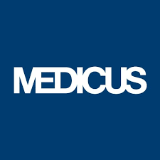
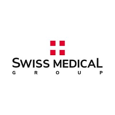

"Las Mejores Coberturas Medicas de Argentina"
Existen más de 70 empresas de medicina prepaga sólo en Buenos Aires. Cada una presenta distintos tipos de prestaciones y aranceles. Sin embargo, son sólo 6 prepagas las que lideran la oferta y reúnen más del 70% de afiliados en el país. ¡Te mostramos cuáles son!
OSDE
No sólo es es la medicina prepaga más reconocida y popular de toda Argentina, si no también cuenta con la mayor cantidad de socios y un elevado nivel de satisfacción. En estadísticas, más de un 30% de los afiliados totales de todas las prepagas Argentinas, eligen OSDE; nació en 1991, y se convirtió en la primera red de servicios médicos en Argentina con una propuesta de varios planes abiertos de salud para sus afiliados. Con más de 40 años de trayectoria, OSDE cuenta con una excelente calidad de atención y una gran red de prestadores médicos que la respalda. Planes de Salud de OSDE, propone varios planes de salud que van desde los planes más básicos hasta los más completos, y ofrecen una cobertura completa en todos los sanatorios más prestigiosos. El arancel de esos planes cambia según la edad y el tamaño del grupo familiar.
Medicus
Medicus es otra de las medicinas prepagas de mayor calidad en toda Argentina, y una de las prepagas líderes con una excelente reputación. Se diferencia por su variedad de planes que ofrecen servicios médicos y cartillas de niveles y tamaños diferentes. Nació hace casi 30 años, como empresa de medicina prepaga de la mano de un grupo de médicos. Su principal objetivo era ofrecer un servicio de atención médica de altísima calidad. Para lograrlo, reclutaron a médicos altamente calificados y contrataron los mejores centros de diagnóstico e internación. La prepaga cuenta con modernos centros de atención especialmente bien ubicados y distribuidos en Capital, en una zona de Barrio Norte llamada “ciudad médica” donde se concentran muchos centros médicos de prestigio. Planes de Salud de Medicus Medicus propone varios planes de salud que van desde los planes básicos con copago hasta los más completos que ofrecen una cobertura total en todos los sanatorios más prestigiosos. La cuota de esos planes varía según la edad y el tamaño del grupo familiar.
Swiss Medical
La prepaga de Swiss Medical es una de las varias entidades del Swiss Medical Group, uno de los grupos de empresas en Argentina más importante. Nació en 1989, al mismo momento que la Clínica y Maternidad Suiza Argentina, una de las instituciones más prestigiosas de Argentina y una de sus 7 clínicas propias. Esta prepaga se destaca por el nivel de servicio hacia sus afiliados y cuenta con más de un millón de socios. Swiss Medical propone numerosos planes que van desde una cobertura a precio alcanzable, hasta los planes muy caros de niveles superiores con una cobertura máxima en las mejores instituciones. Planes de Salud de Swiss Medical La propuesta es amplia: 9 planes para casi todos los estatus económicos, con el costo mensual aumentando con los criterios y niveles de cobertura.
Galeno